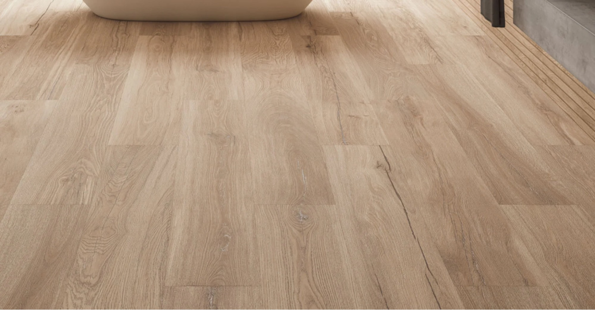
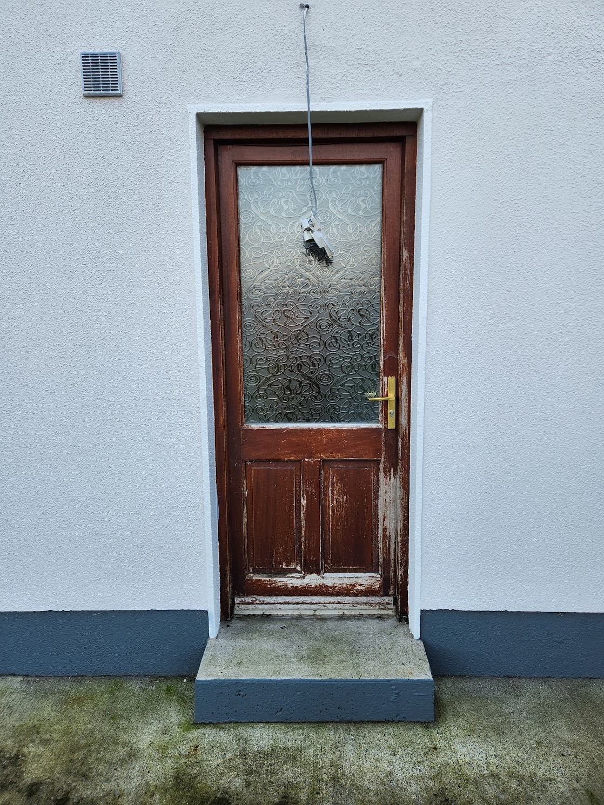

Flooring Vision 🏡
Create a calm palette with durable surfaces that stand up to busy family life.
Current Photos

Inspo Photos

Upstairs Flooring 🛏️
- Lay grey carpet across bedrooms, landing, and stairs.
- Select a medium pile with stain protection for easy maintenance.
- Install fresh underlay for warmth and sound reduction.
Current Photos

Inspo Photos

Downstairs Flooring 🛋️
- Fit SPC (stone plastic composite) flooring throughout in a light oak finish.
- Use matching trims and stair nosing for a polished look.
- Allow expansion gaps and finish neatly under door bars.
Current Photos
Capture existing downstairs floors and transitions.
Inspo Photos
Upload examples of light oak SPC installs and detailing.
Action Steps ✅
- Confirm floor levels and moisture readings before installation.
- Capture “before” photos of current floors for records.
- Book installation dates once heating and insulation work is complete.
Current Photos
Track site prep progress with updated shots.
Inspo Photos
Add visuals of installation sequencing or finish profiles.